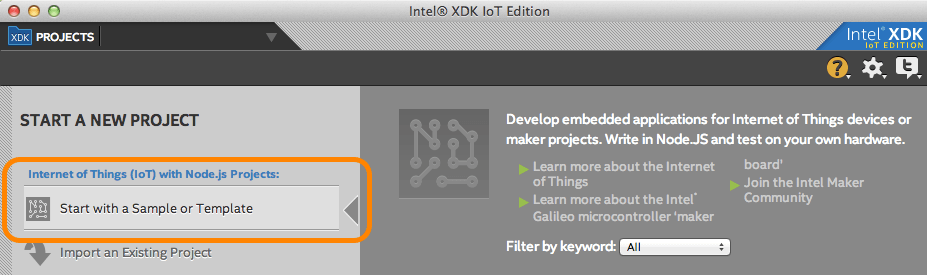
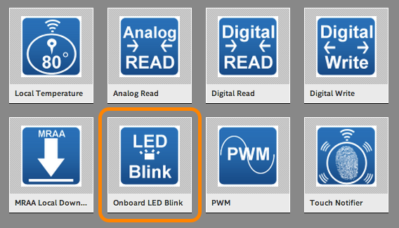
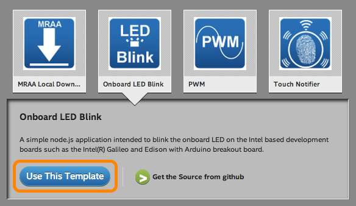
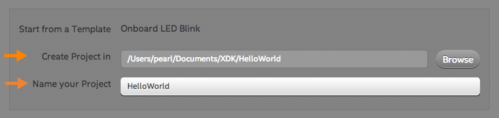
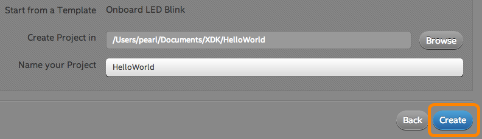
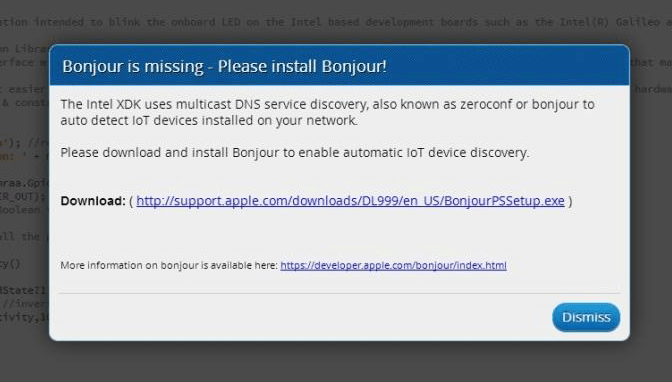

Create a project
The Intel® XDK IoT Edition has various project creation options. To start, create a blinking LED project from a pre-existing sample.

- Under the “Internet of Things (IoT) with Node.js Projects” option in the lefthand menu, select “Start with a Sample or Template”.

- A list of templates for developing Node.js applications will be shown.
Select “Onboard LED Blink” template.

- Then click “Use This Template”.

- Choose a directory for your project files, and enter a name for your project.

- Click “Create” in the bottom right corner.

Missing Bonjour?
If Bonjour is not installed on your machine, you will see a “Bonjour is missing” message.

Windows users: Complete the steps in Install Bonjour.